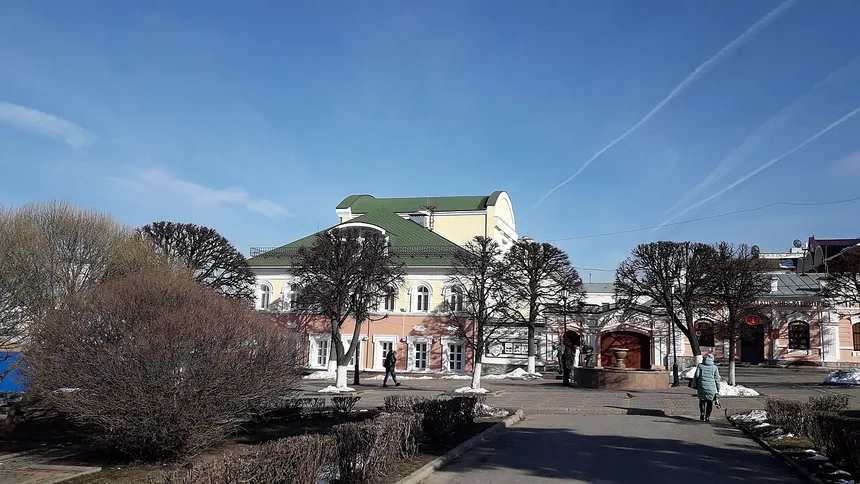
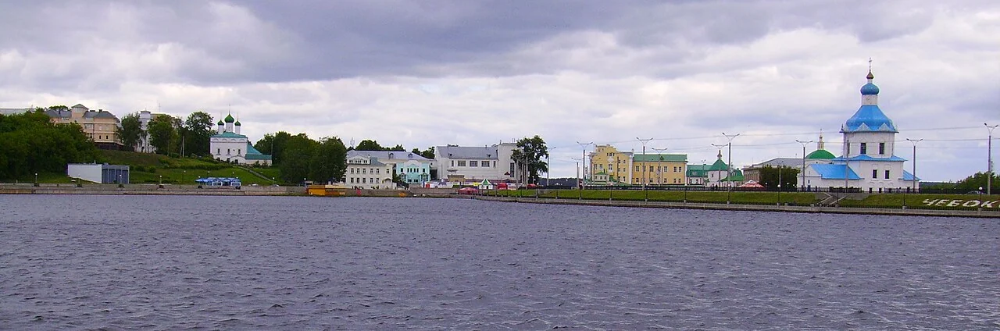
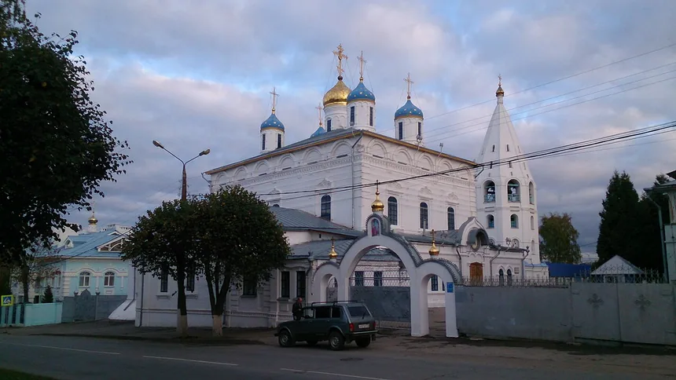
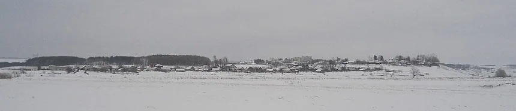
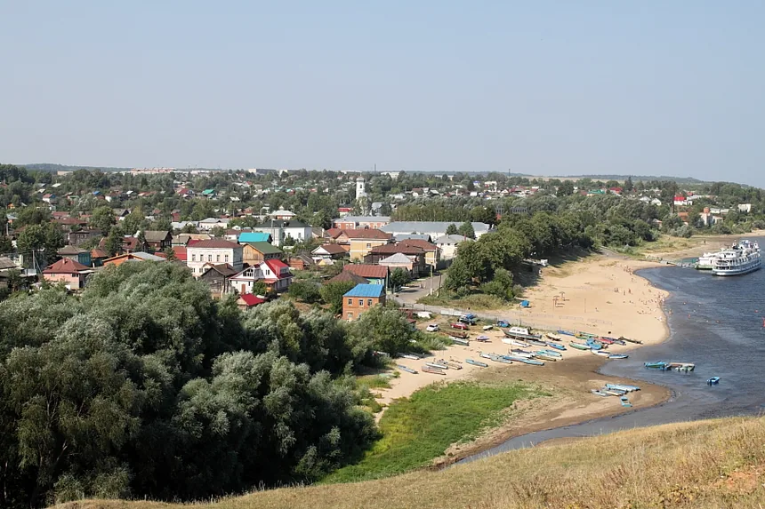

Чувашский национальный музей
Музей на Красной площади Чебоксар знакомит с археологией, историей и традиционным костюмом чувашей.
Волжские обрывы, купеческие города и вышитые орнаменты, по которым можно читать историю чувашской культуры.

Большая часть Чувашии лежит на высоком правом берегу Волги. Чебоксары выросли над рекой, а Чебоксарский залив стал частью городского центра. В Алатыре, Ядрине и Мариинском Посаде сохранилась историческая застройка.
Чувашские земли вошли в состав Русского государства.
24 июня образована Чувашская автономная область.
21 апреля область преобразована в Чувашскую АССР.
Принята Декларация о государственном суверенитете, закрепившая название Чувашская ССР.
13 февраля республика получила современное название — Чувашская Республика.

Музей на Красной площади Чебоксар знакомит с археологией, историей и традиционным костюмом чувашей.

Каменный собор XVII века с отдельной колокольней — памятник старых Чебоксар.

В родном селе космонавта Андрияна Николаева хранятся его личные вещи и экспонаты, связанные с полётами.

Со смотровой площадки в Мариинском Посаде видны Волга и противоположный берег.
На севере республики пейзаж определяет Волга, на западе — долина Суры. Леса сосредоточены в Заволжье и вдоль Суры. На юго-востоке природные комплексы охраняет национальный парк «Чаваш вармане».
Государственные языки республики — чувашский и русский. В традиционном костюме особенно заметна вышивка. В Чебоксарах ей посвящён отдельный музей, где можно сравнить орнаменты разных групп чувашей.
Хуплу — закрытый пирог, который пекут с мясом и картофелем. Шарттан — мясное блюдо, которое традиционно готовят в оболочке из бараньего желудка.